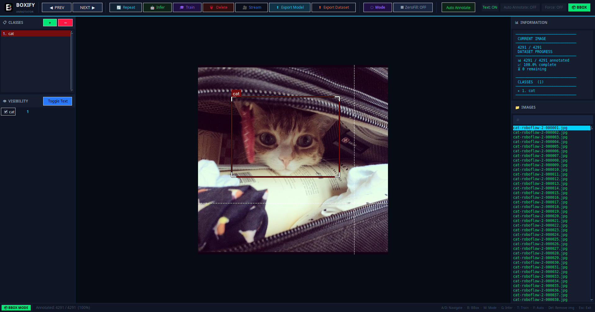

01 / PRIVACY
Local by design
Your images, labels, and models stay on the machine you control.
Boxify is a private, local-first annotation workspace for building object detection and image segmentation datasets with YOLO models.

Everything you need to annotate, inspect, train, and export without sending your dataset through a cloud service.
Your images, labels, and models stay on the machine you control.
Use inference and repeat annotations to move through large datasets faster.
Edit coordinates directly with handles, zoom, visibility controls, and class management.
Go from annotations to Ultralytics training without leaving your workspace.
Prepare datasets in YOLO, COCO, or Pascal VOC formats for downstream tooling.
Run the tool on Linux or Windows with installation scripts included in the repo.
chmod +x boxify_linux_installation.bash ./boxify_linux_installation.bash
1. Install VC_redist 2. Run as administrator: boxify_windows_installation.bat